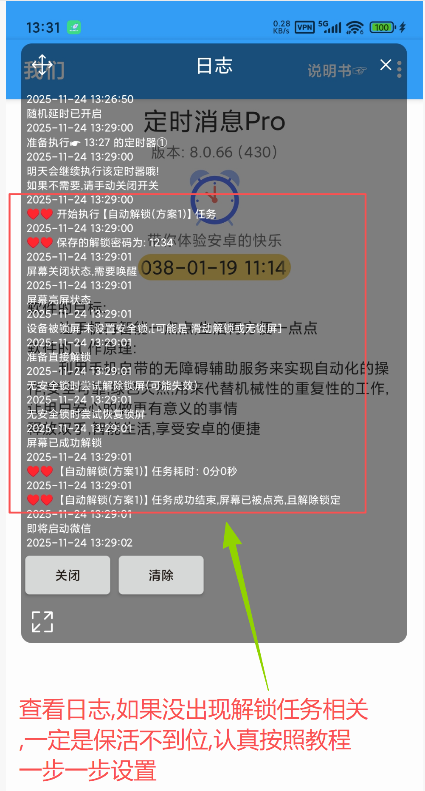

众所周知,安卓机型千千万,很难确保在所有机型上都完美运行,目前在如下机型上测试,运行效果比较稳定:
- 红米note 12Tpro
- 小米13
- vivo neo 5
- 联想 Y700 二代
精力有限,其他机型,未做充分测试,实际效果需自行体验哦
先说结论:
只要测试能成功,那么定时发送也一定可以成功
如果定时发送失败,
一定是你保活措施做的不到位 ,导致软件被限制后台运行或者被杀后台
注意: 现在的系统对第三方软件有严格的后台限制,就算保活措施全部到位了,依然可能
偶尔出现延迟 1-3 分钟 才执行任务,是正常的
就是说: 超过设定时间3分钟后还没执行的话,才可以判断此次定时任务失败
分三种情况:
- 1.手机无法自动点亮屏幕,当你手动解锁手机后,后续也无法发送
我们打开软件,点击 [查看] 运行日志:
如果日志里面什么有用的内容都没有出现
说明: 软件被杀后台啦!!!
保活措施不到位导致,请认真设置保活,查看常见问题②之1:保活措施不到位
- 2.手机无法自动点亮屏幕,当你手动解锁手机后,后续能正常发送
我们打开软件,点击 [查看] 运行日志:
如果没出现类似红色框内的解锁任务提示,则说明:软件被限制后台运行啦!!!

未允许软件后台运行导致,请允许 本软件后台运行,查看常见问题②之2:权限未开启完整
- 3.手机能自动点亮屏幕,但无法自动解锁
说明: 软件运行正常,只是无法自动解锁
我们打开软件,点击 [查看] 运行日志:
根据日志里的提示,分析下为何无法解锁
结合日志,并查看常见问题②之3:能点亮屏幕,无法解锁设备